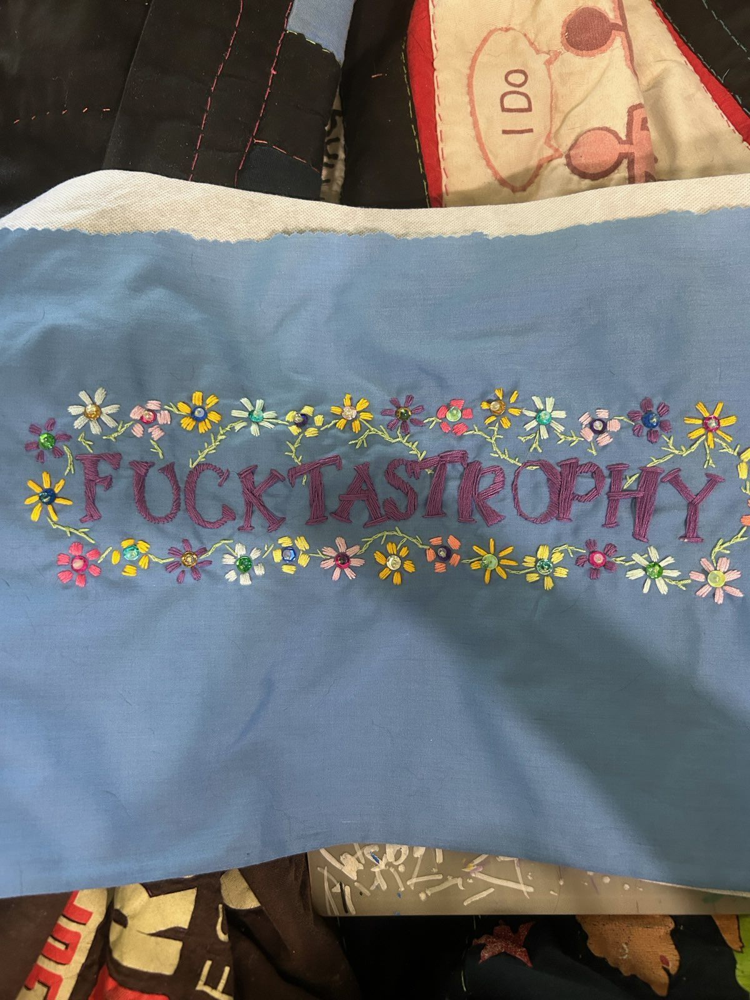
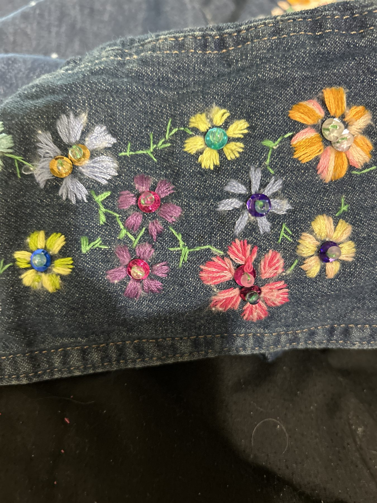
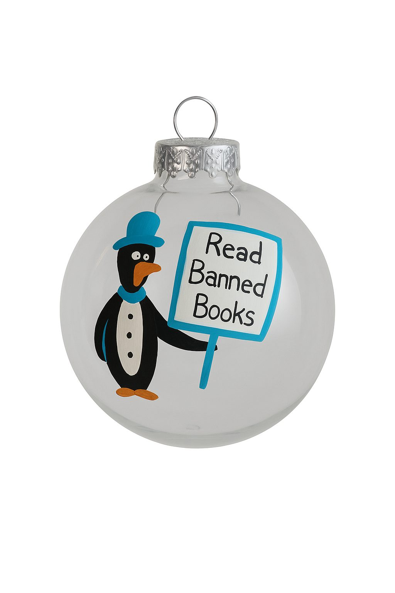

3rd World Art
Hand embroidery on salvaged cloth. Flowers, rhinestones, and things people actually say.
- MaterialsOld sheets, cut-off jeans, thrifted cotton
- MethodStitched by hand, one at a time
- EditionsOne of each — no repeats
Recycle · Reuse · Repurpose — Tulsa, Oklahoma

Art made from materials that already had a life — stitched, cut and rebuilt by hand.

Hand embroidery on salvaged cloth. Flowers, rhinestones, and things people actually say.

Ornaments, originals and collectibles — plus commissions, curation and installation.
Artzy4u is a recycle, reuse and repurpose materials creation.
Nothing here starts new. Old sheets, cut-off jeans, thrifted cotton — cloth that already had a life gets another one. Everything is made by hand, one at a time, which is why there is exactly one of each.
Commissions, questions, or a phrase you want on a pillowcase.
stephanie@artzy4u.com